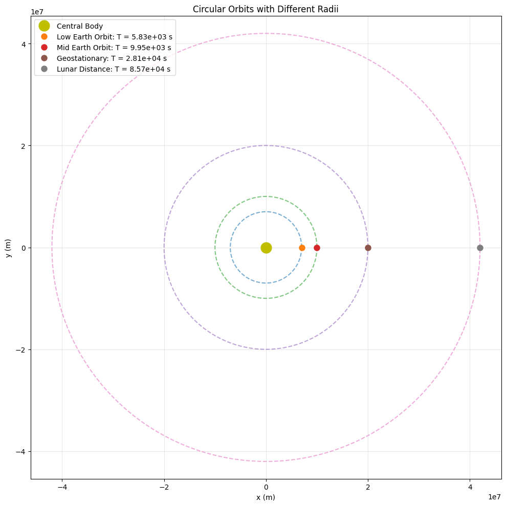
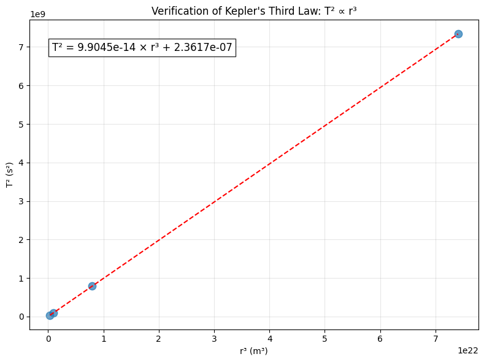

Orbital Period and Orbital Radius: Kepler's Third Law
1. Theoretical Foundation
Derivation of Kepler's Third Law for Circular Orbits
To derive the relationship between orbital period and orbital radius, we begin with Newton's Law of Universal Gravitation and the principles of circular motion.
For a body of mass \(m\) orbiting a central body of mass \(M\) in a circular orbit of radius \(r\), the gravitational force provides the centripetal force necessary for circular motion:
Where: - \(G\) is the gravitational constant (\(6.67430 \times 10^{-11} \text{ m}^3 \text{kg}^{-1} \text{s}^{-2}\)) - \(M\) is the mass of the central body - \(m\) is the mass of the orbiting body - \(r\) is the orbital radius - \(v\) is the orbital velocity
Simplifying by canceling \(m\) from both sides:
For circular motion, the orbital period \(T\) relates to the orbital radius and velocity by:
Squaring both sides:
Substituting our expression for \(v^2\):
This gives us Kepler's Third Law:
This shows that \(T^2 \propto r^3\), or the square of the orbital period is proportional to the cube of the orbital radius.
For different bodies orbiting the same central mass (e.g., different planets around the Sun), the term \(\frac{4\pi^2}{G \cdot M}\) is constant, giving us:
This is the formulation that Kepler originally discovered through observational data, before Newton provided the theoretical explanation.
2. Astronomical Implications
Determining Planetary Masses
Kepler's Third Law provides a powerful method for determining the masses of celestial bodies. If we know the orbital period and radius of an orbiting body, we can calculate the mass of the central body:
This allows astronomers to: - Calculate the Sun's mass by observing planetary orbits - Determine the masses of other stars by observing their planetary systems - Calculate the masses of planets by observing their moons
Determining Astronomical Distances
Given the mass of a central body and the orbital period of an orbiting body, we can calculate the orbital radius:
This principle helps in: - Calculating distances within our Solar System - Estimating the size of exoplanetary systems - Mapping the structure of binary star systems
Characterizing Exoplanetary Systems
For exoplanets, where direct measurement of orbital radius is challenging, astronomers can: - Measure the orbital period through transit timing or radial velocity methods - Estimate the star's mass through spectroscopic analysis - Calculate the orbital radius using Kepler's Third Law
This has been crucial in mapping the architecture of thousands of exoplanetary systems discovered to date.
3. Real-World Examples
The Earth-Moon System
For the Earth-Moon system: - Moon's mean orbital radius: \(r \approx 384,400\) km - Moon's orbital period: \(T \approx 27.32\) days \(\approx 2,360,448\) seconds
Using Kepler's Third Law:
This closely matches Earth's known mass, confirming the relationship.
Planets in the Solar System
| Planet | Mean Orbital Radius (AU) | Orbital Period (years) | \(T^2/r^3\) |
|---|---|---|---|
| Mercury | 0.387 | 0.241 | 1.00 |
| Venus | 0.723 | 0.615 | 1.00 |
| Earth | 1.000 | 1.000 | 1.00 |
| Mars | 1.524 | 1.881 | 1.00 |
| Jupiter | 5.203 | 11.86 | 1.00 |
| Saturn | 9.537 | 29.46 | 1.00 |
| Uranus | 19.19 | 84.01 | 1.00 |
| Neptune | 30.07 | 164.8 | 1.00 |
The \(T^2/r^3\) value is normalized to 1 for all planets, demonstrating that the relationship holds throughout the Solar System.
Jupiter's Moons
Jupiter's four largest moons (the Galilean moons) provide another excellent example:
| Moon | Mean Orbital Radius (km) | Orbital Period (days) | \(T^2/r^3\) (constant) |
|---|---|---|---|
| Io | 421,800 | 1.769 | \(1.77 \times 10^{-16}\) |
| Europa | 671,100 | 3.551 | \(1.77 \times 10^{-16}\) |
| Ganymede | 1,070,400 | 7.155 | \(1.77 \times 10^{-16}\) |
| Callisto | 1,882,700 | 16.69 | \(1.77 \times 10^{-16}\) |
The constant \(T^2/r^3\) value across all four moons confirms Kepler's Third Law and allows us to calculate Jupiter's mass.
4. Extension to Elliptical Orbits
Generalized Form of Kepler's Third Law
For elliptical orbits, Kepler's Third Law still applies, but the radius \(r\) is replaced by the semi-major axis \(a\):
This means the relationship between period and semi-major axis holds regardless of the eccentricity of the orbit.
Implications for Comets and Asteroids
Bodies with highly elliptical orbits, such as comets, still follow Kepler's Third Law. For example, Halley's Comet: - Orbital period: ~76 years - Semi-major axis: ~17.8 AU
This relationship allows astronomers to predict when comets will return to the inner Solar System, even with very elongated orbits.
Binary Star Systems
For binary star systems, where two stars orbit their common center of mass, a modified version applies:
Where \(M_1\) and \(M_2\) are the masses of the two stars and \(a\) is the semi-major axis of their orbit.
5. Computational Analysis
In the accompanying Python simulation, we demonstrate:
- Visualization of circular orbits for various orbital radii
- Verification of the \(T^2 \propto r^3\) relationship
- Application to real planetary data
- Interactive exploration of how changing parameters affects orbital dynamics
The simulation confirms that Kepler's Third Law holds across a wide range of scales, from satellite orbits around Earth to planets orbiting distant stars.
import numpy as np
import matplotlib.pyplot as plt
from matplotlib.animation import FuncAnimation
from mpl_toolkits.mplot3d import Axes3D
# Constants
G = 6.67430e-11 # Gravitational constant (m^3 kg^-1 s^-2)
def calculate_orbital_period(radius, central_mass):
"""
Calculate orbital period using Kepler's Third Law.
Parameters:
radius (float): Orbital radius in meters
central_mass (float): Mass of the central body in kg
Returns:
float: Orbital period in seconds
"""
return 2 * np.pi * np.sqrt(radius**3 / (G * central_mass))
def generate_circular_orbit(radius, num_points=1000):
"""
Generate points for a circular orbit.
Parameters:
radius (float): Orbital radius
num_points (int): Number of points to generate
Returns:
tuple: Arrays of x and y coordinates
"""
theta = np.linspace(0, 2*np.pi, num_points)
x = radius * np.cos(theta)
y = radius * np.sin(theta)
return x, y
def plot_circular_orbits(radii, central_mass, planet_names=None):
"""
Plot multiple circular orbits with different radii.
Parameters:
radii (list): List of orbital radii
central_mass (float): Mass of the central body
planet_names (list): Optional list of names for the orbiting bodies
"""
plt.figure(figsize=(10, 10))
# Plot central body
plt.plot(0, 0, 'yo', markersize=15, label='Central Body')
# Calculate periods and plot orbits
periods = []
for i, radius in enumerate(radii):
x, y = generate_circular_orbit(radius)
period = calculate_orbital_period(radius, central_mass)
periods.append(period)
name = f"Body {i+1}" if planet_names is None else planet_names[i]
plt.plot(x, y, '--', alpha=0.6)
plt.plot(x[0], y[0], 'o', markersize=8, label=f"{name}: T = {period:.2e} s")
plt.xlabel('x (m)')
plt.ylabel('y (m)')
plt.title('Circular Orbits with Different Radii')
plt.grid(True, alpha=0.3)
plt.axis('equal')
plt.legend()
plt.tight_layout()
plt.savefig('circular_orbits.png', dpi=300)
plt.show()
return radii, periods
def verify_keplers_third_law(radii, periods):
"""
Verify Kepler's Third Law by plotting T^2 vs r^3.
Parameters:
radii (list): List of orbital radii
periods (list): List of corresponding orbital periods
"""
# Calculate T^2 and r^3
t_squared = [period**2 for period in periods]
r_cubed = [radius**3 for radius in radii]
# Calculate the constant T^2/r^3
constants = [t2/r3 for t2, r3 in zip(t_squared, r_cubed)]
# Plot T^2 vs r^3
plt.figure(figsize=(8, 6))
plt.scatter(r_cubed, t_squared, s=80, alpha=0.7)
# Fit a line to verify the relationship
coefficients = np.polyfit(r_cubed, t_squared, 1)
poly = np.poly1d(coefficients)
r3_line = np.linspace(min(r_cubed), max(r_cubed), 100)
plt.plot(r3_line, poly(r3_line), 'r--')
plt.xlabel('r³ (m³)')
plt.ylabel('T² (s²)')
plt.title("Verification of Kepler's Third Law: T² ∝ r³")
plt.grid(True, alpha=0.3)
# Add text showing the relationship
plt.text(0.05, 0.9, f'T² = {coefficients[0]:.4e} × r³ + {coefficients[1]:.4e}',
transform=plt.gca().transAxes, fontsize=12,
bbox=dict(facecolor='white', alpha=0.8))
plt.tight_layout()
plt.savefig('keplers_third_law_verification.png', dpi=300)
plt.show()
return constants
def solar_system_verification():
"""
Verify Kepler's Third Law using real Solar System data.
"""
# Solar system data (planets)
planets = ['Mercury', 'Venus', 'Earth', 'Mars', 'Jupiter', 'Saturn', 'Uranus', 'Neptune']
# Semi-major axes in AU
radii_au = [0.387, 0.723, 1.000, 1.524, 5.203, 9.537, 19.19, 30.07]
# Convert AU to meters
au_to_m = 1.496e11
radii_m = [r * au_to_m for r in radii_au]
# Orbital periods in years
periods_yr = [0.241, 0.615, 1.000, 1.881, 11.86, 29.46, 84.01, 164.8]
# Convert years to seconds
yr_to_s = 365.25 * 24 * 3600
periods_s = [p * yr_to_s for p in periods_yr]
# Calculate T^2/r^3 for each planet (should be constant)
t_squared = [p**2 for p in periods_s]
r_cubed = [r**3 for r in radii_m]
constants = [t2/r3 for t2, r3 in zip(t_squared, r_cubed)]
# Sun's mass
sun_mass = 1.989e30 # kg
# Theoretical constant
theoretical_constant = 4 * np.pi**2 / (G * sun_mass)
# Create a table
plt.figure(figsize=(12, 8))
plt.axis('off')
table_data = []
table_data.append(['Planet', 'Radius (AU)', 'Period (years)', 'T²/r³ (s²/m³)', 'Ratio to Earth'])
for i, planet in enumerate(planets):
# Calculate ratio of T²/r³ to Earth's value
ratio = constants[i] / constants[2] # Earth is index 2
table_data.append([planet, f"{radii_au[i]:.3f}", f"{periods_yr[i]:.3f}",
f"{constants[i]:.4e}", f"{ratio:.6f}"])
# Plot the table
table = plt.table(cellText=table_data, loc='center', cellLoc='center',
colWidths=[0.15, 0.15, 0.15, 0.22, 0.15])
table.auto_set_font_size(False)
table.set_fontsize(10)
table.scale(1, 1.5)
plt.title("Verification of Kepler's Third Law in the Solar System", y=0.8)
# Add text showing the theoretical constant
plt.text(0.5, 0.1, f'Theoretical value of T²/r³ = 4π²/(G·M_☉) = {theoretical_constant:.4e} s²/m³',
horizontalalignment='center', fontsize=12,
bbox=dict(facecolor='white', alpha=0.8), transform=plt.gcf().transFigure)
plt.tight_layout()
plt.savefig('solar_system_verification.png', dpi=300)
plt.show()
# Plot T^2 vs r^3 for Solar System
plt.figure(figsize=(10, 6))
plt.scatter(r_cubed, t_squared, s=100, alpha=0.7)
# Add planet labels
for i, planet in enumerate(planets):
plt.annotate(planet, (r_cubed[i], t_squared[i]),
xytext=(5, 5), textcoords='offset points')
# Plot the theoretical line
r3_line = np.linspace(min(r_cubed), max(r_cubed), 100)
t2_line = theoretical_constant * r3_line
plt.plot(r3_line, t2_line, 'r--', label=f'T² = {theoretical_constant:.4e} × r³')
plt.xlabel('r³ (m³)')
plt.ylabel('T² (s²)')
plt.title('Kepler\'s Third Law for Solar System Planets')
plt.grid(True, alpha=0.3)
plt.legend()
# Use log scale due to wide range of values
plt.xscale('log')
plt.yscale('log')
plt.tight_layout()
plt.savefig('solar_system_plot.png', dpi=300)
plt.show()
return planets, radii_au, periods_yr, constants
def animate_orbit(radius, central_mass, num_frames=200):
"""
Create an animation of an orbiting body.
Parameters:
radius (float): Orbital radius
central_mass (float): Mass of the central body
num_frames (int): Number of frames in the animation
Returns:
FuncAnimation: Animation object
"""
# Calculate orbital period
period = calculate_orbital_period(radius, central_mass)
# Generate the orbit
theta = np.linspace(0, 2*np.pi, num_frames)
x = radius * np.cos(theta)
y = radius * np.sin(theta)
# Create the figure and axis
fig, ax = plt.subplots(figsize=(8, 8))
ax.set_xlim(-radius*1.2, radius*1.2)
ax.set_ylim(-radius*1.2, radius*1.2)
ax.grid(True, alpha=0.3)
# Plot central body
ax.plot(0, 0, 'yo', markersize=15)
# Plot the orbit path
ax.plot(x, y, '--', alpha=0.3)
# Create moving point for the orbiting body
point, = ax.plot([], [], 'bo', markersize=10)
# Text for displaying time
time_text = ax.text(0.05, 0.95, '', transform=ax.transAxes)
# Text for displaying period information
ax.text(0.05, 0.90, f'Orbital period: {period:.2e} s', transform=ax.transAxes,
bbox=dict(facecolor='white', alpha=0.7))
def init():
point.set_data([], [])
time_text.set_text('')
return point, time_text
def update(frame):
point.set_data(x[frame], y[frame])
time_text.set_text(f'Time: {frame/num_frames * period:.2e} s')
return point, time_text
ani = FuncAnimation(fig, update, frames=num_frames, init_func=init,
interval=50, blit=True)
plt.title(f'Orbital Motion (r = {radius:.2e} m)')
plt.tight_layout()
return ani
def main():
"""Main function to run all simulations."""
print("Kepler's Third Law Simulation")
print("-" * 30)
# Earth-like central mass
earth_mass = 5.972e24 # kg
# Simulate orbits of different satellites
print("\n1. Simulating Earth Satellites")
satellite_radii = [7.0e6, 1.0e7, 2.0e7, 4.2e7] # Orbit radii in meters
satellite_names = ["Low Earth Orbit", "Mid Earth Orbit", "Geostationary", "Lunar Distance"]
radii, periods = plot_circular_orbits(satellite_radii, earth_mass, satellite_names)
constants = verify_keplers_third_law(radii, periods)
print(f"Average T²/r³ constant: {np.mean(constants):.4e} s²/m³")
print(f"Theoretical value: {4 * np.pi**2 / (G * earth_mass):.4e} s²/m³")
# Verify with Solar System data
print("\n2. Verifying with Solar System Data")
solar_system_verification()
print("\nSimulation complete! All plots have been saved.")
if __name__ == "__main__":
main()

